|
 |
 |
| BNK48 SENBATSU GENERAL ELECTION | |
Senbatsu 16 อันดับแรก |
|
| 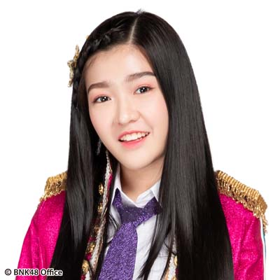 | |
| อันดับที่ 1 CHERPRANG(Team BIII) คะแนนโหวต 84195คะแนน | อันดับที่ 2JENNIS(Team BIII) คะแนนโหวต 58362 คะแนน |
| 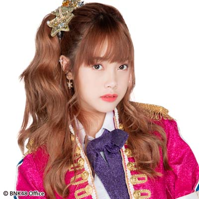 | 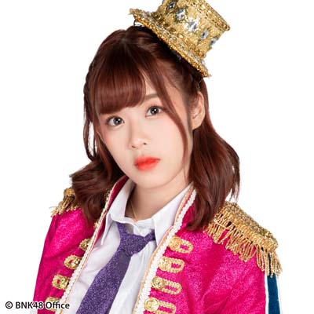 |
| อันดับที่ 3MUSIC(Team BIII) คะแนนโหวต 57987 คะแนน | อันดับที่ 4MOBILE(Team BIII) คะแนนโหวต 56028 คะแนน |
| อันดับที่ 5JANE(Team BIII) คะแนนโหวต 47369 คะแนน | อันดับที่ 6ORN(Team BIII) คะแนนโหวต 46126 คะแนน |
| 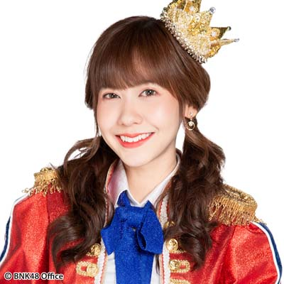 | 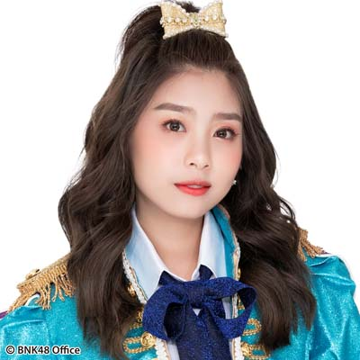 |
| อันดับที่ 7NOEY(Team BIII) คะแนนโหวต 44769 คะแนน | อันดับที่ 8KAEW(Team BIII)คะแนนโหวต 44479 คะแนน |
| 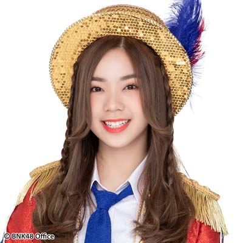 | 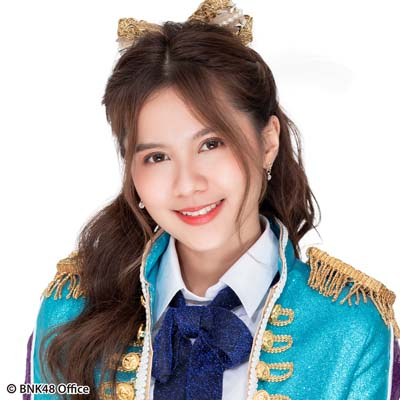 |
| อันดับที่ 9PUN(Team BIII) คะแนนโหวต 44140 คะแนน | อันดับที่ 10NAMNEUNG(Team BIII) คะแนนโหวต 28134 คะแนน |
| 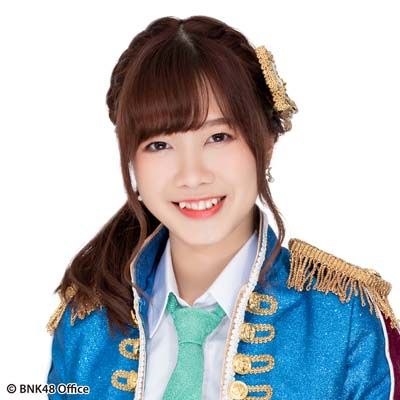 | |
| อันดับที่ 11TARWAAN(Team BIII) คะแนนโหวต 27978 คะแนน | อันดับที่ 12PUPE(Team BIII) คะแนนโหวต 26267 คะแนน |
| 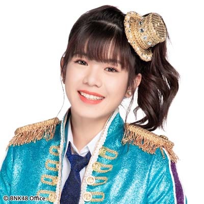 | 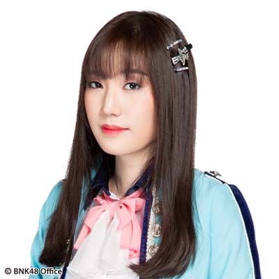 |
| อันดับที่ 13WEE(Team Trainee) คะแนนโหวต 23761 คะแนน | อันดับที่ 14NATHERINE(Team Trainee) คะแนนโหวต 17210 คะแนน |
| 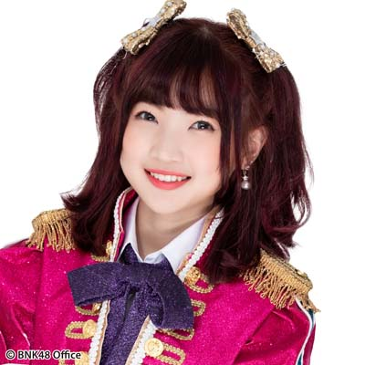 | |
อันดับที่ 15KAIMOOK(Team BIII) คะแนนโหวต 14018 คะแนน |
อันดับที่ 16MIND(Team BIII) คะแนนโหวต 13594 คะแนน |